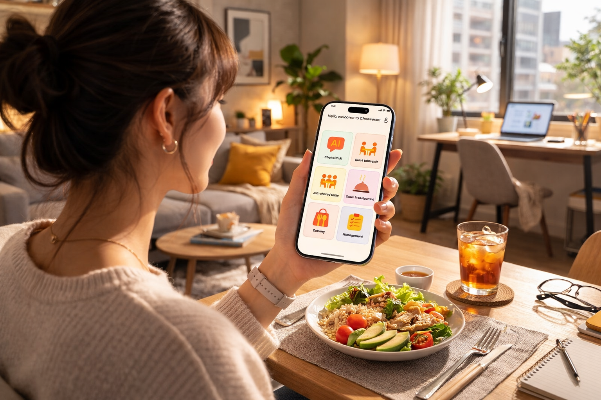
Chewverse
An AI dining companion concept designed to make short solo meals feel lighter, more personal, and emotionally engaging.
Chewverse explores how generative AI can deliver lightweight companionship during the 15–20 minute meal breaks common in modern life. It responds to the loneliness many solo diners feel by providing quick, emotionally attuned conversations instead of yet another feed to scroll through. This case study shows how I approached user research, opportunity framing, MVP definition and iteration—and why the concept has business potential beyond a student project.
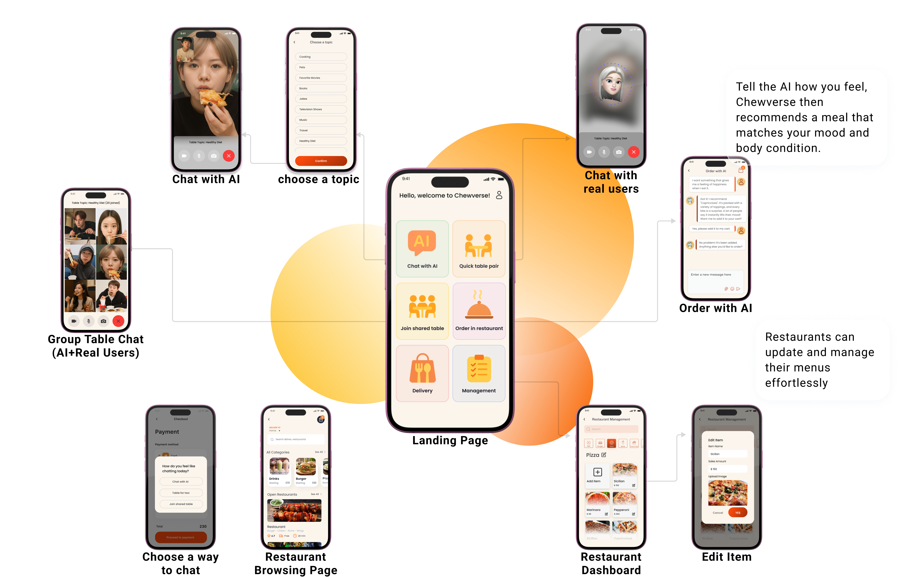
Opportunity & Problem Definition
Solitary dining is increasingly common in cities: people often have only 15–20 minutes for lunch, and many prefer eating alone because their friends and colleagues are busy. Research indicates that 42 % of people dine alone at least three times per week and 60 % feel lonely during meals. Meanwhile, existing products focus on food discovery, delivery or passive content consumption; they don’t address the emotional needs of diners.
Opportunity: There is a whitespace for an AI‑assisted service that provides low‑pressure, emotionally responsive companionship during short meals. Instead of scrolling feeds that lower attention and mood, Chewverse offers a lightweight human‑like interaction that finishes when your lunch does.
How might we…
Create low‑pressure companionship for solo diners during a short meal break?
Product principles
- Low social burden – the experience should start quickly and end gracefully, without awkwardness.
- Emotionally responsive – the AI should adjust tone and topics to the user’s mood, offering empathy when needed.
- Fast start & finish – onboarding and exit must fit within a 15–20 minute window.
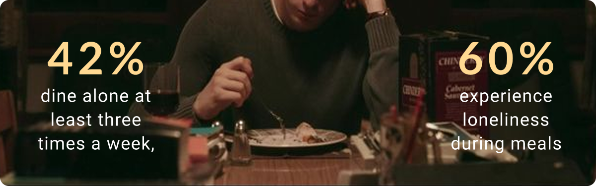
Why use AI?
1. Human companionship isn’t always available during solo meals.
Most solo dining moments last only 15–20 minutes. People often want lightweight emotional interaction — not long conversations, social commitment, or scheduling another person. AI enables instant, low-pressure companionship that is available anytime, without requiring social coordination.
2. Emotional support needs to be adaptive and contextual.
Different users experience solo dining differently: some want distraction, some want emotional comfort, others simply want a quiet presence. AI allows Chewverse to respond dynamically based on mood, interaction style, and conversational cues — creating a more emotionally personalized experience.
3. Traditional social products create cognitive and social pressure.
Messaging friends, joining communities, or meeting strangers can feel emotionally demanding during short breaks. Instead of maximizing engagement, Chewverse uses AI to create lightweight interactions, interruptible conversations, and emotionally safe experiences. Users can enter and leave freely without social consequences.
4. AI transforms dining from a passive activity into an emotionally responsive experience.
Rather than functioning as a chatbot, Chewverse explores how AI can act as a contextual companion, a reflective listener, and a low-friction emotional interface during everyday routines. The goal is not replacing human relationships, but supporting small moments of emotional connection throughout daily life.
User Insight
To ground the opportunity, I built a primary persona based on interviews and surveys:
Mandy – 26‑year‑old marketing professional
- Lunch constraint: typically only 15 minutes to eat; often eats alone due to conflicting schedules.
- Pain points: feels socially isolated, finds existing apps overly complex or information‑dense, doesn’t want to doom‑scroll at lunch.
- Behaviour: uses short videos or social media during meals but feels emptier afterwards.
The insight was clear: users aren’t seeking more content; they crave a light, human‑like presence that fits into a short break.
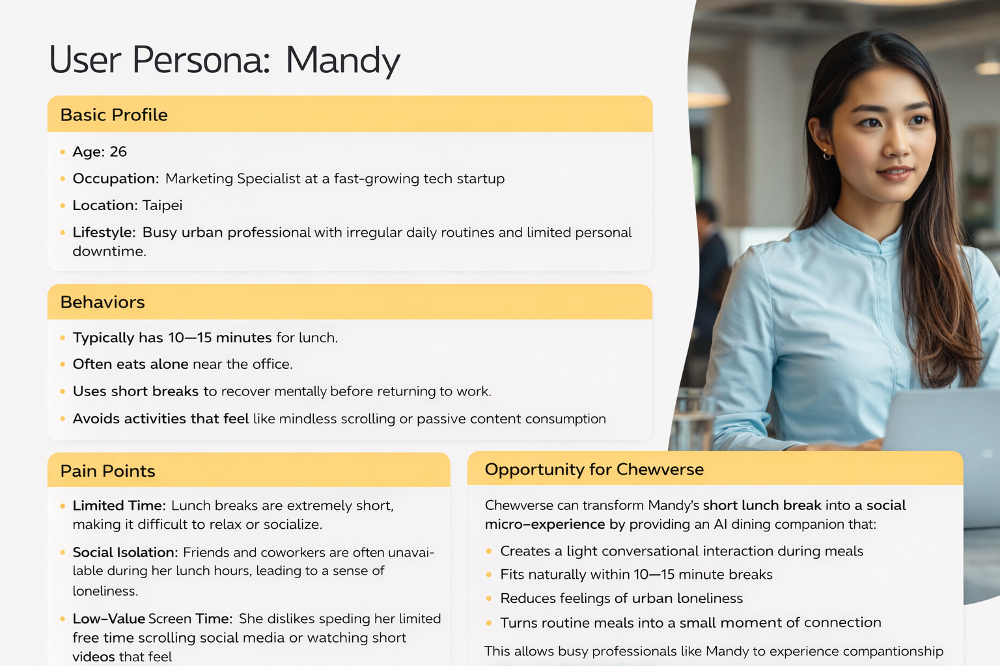
Product Direction & Concept Convergence
I explored multiple directions before converging on the final concept:
- Smart restaurant experience – integrate seat finding, menu browsing and ordering into one service.
- AI search/utility – a personal assistant to recommend meals, manage orders and provide information.
- Affective design – focus on emotional support through conversation and mood‑sensing.
By mapping these ideas against user needs and feasibility, I prioritised affective design for the MVP. It solved the core loneliness problem while keeping the scope lean. Utility and restaurant integrations remain important, but they are secondary steps once the companionship experience is validated.
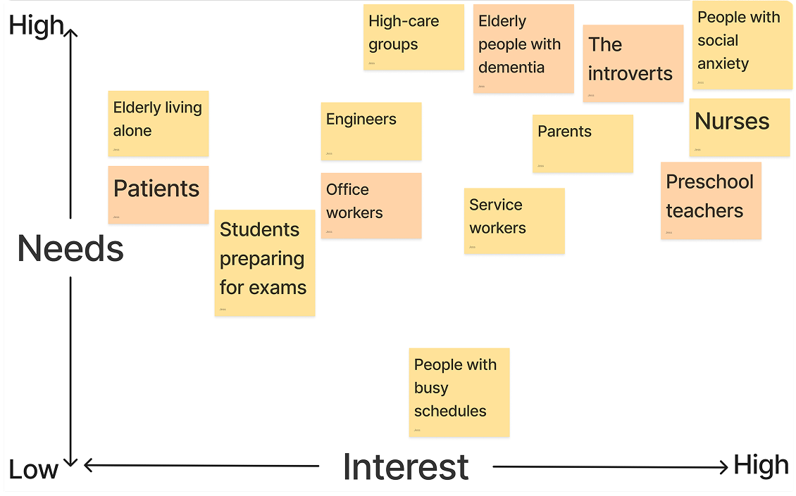
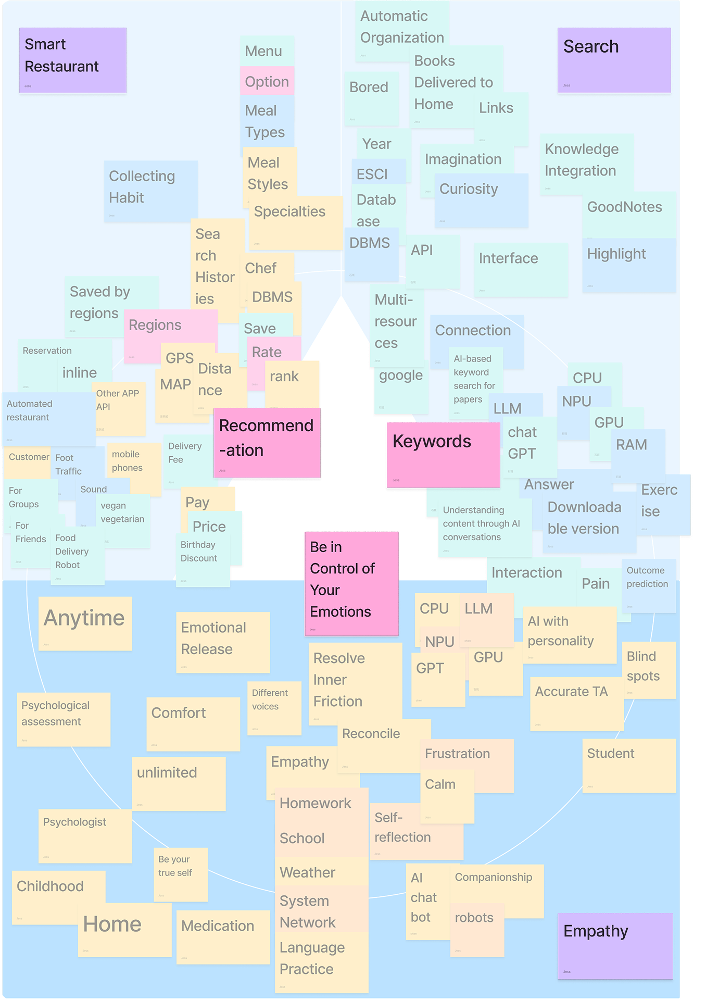
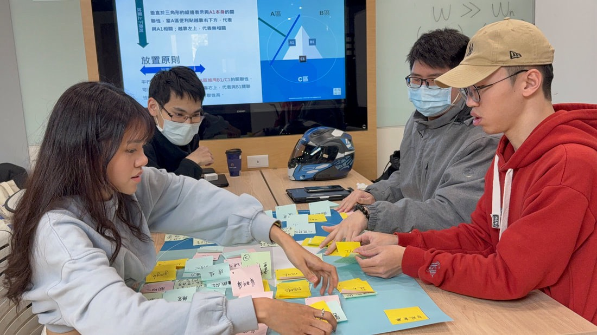
MVP Strategy & Feature Prioritisation
To deliver value quickly, the MVP focuses on low‑friction companionship. Features are prioritised by impact and effort:
Core MVP
| Feature | Rationale |
|---|---|
| AI chat with mood‑responsive topics | Users can start a conversation with one tap and choose from curated topics like small talk, fun facts or wellbeing. The AI adjusts tone based on detected sentiment. |
| Light emotional check‑in | At the start and end, the AI asks a quick check‑in to tailor the conversation and allow users to exit gracefully. |
| Fast onboarding | Users can begin chatting without creating a profile; optional sign‑in unlocks history and personalisation. |
Secondary Features
| Feature | Rationale |
|---|---|
| Chat with real users (Table for Two) | Adds social complexity and moderation; slated for later once solo AI chat value is proven. |
| Group table (AI + multiple users) | Requires strong community management; better after learning from one‑to‑one chats. |
Future Features
| Feature | Reason for deferral |
|---|---|
| AI meal recommendation | Useful when integrated with ordering, but not essential to validate companionship. |
| Restaurant dashboard & service integration | Enables partnerships and monetisation; deferred to post‑MVP once user demand is established. |
By deliberately limiting scope, we ensured the MVP could be built and tested quickly. Success metrics focused on session completion, user satisfaction and qualitative feedback rather than growth vanity metrics.
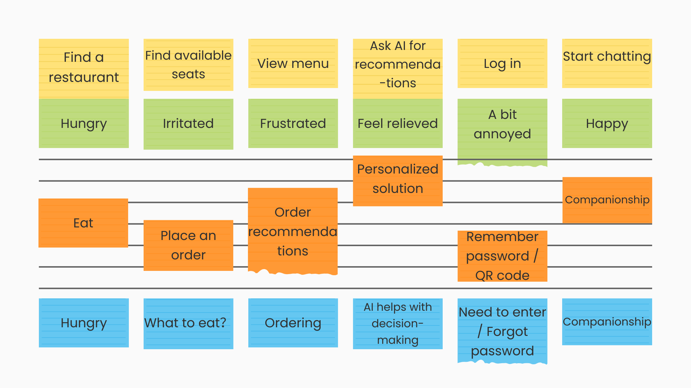
Product Flow
The experience is designed around the rhythm of a short meal. A high‑level flow:
- Landing / Home – users are greeted with options: Chat with AI, Table for Two, Group Table, or Order & Chat.
- Choose interaction – selecting Chat with AI opens a mood‑check prompt and topic selector.
- Conversation – the AI initiates a conversation aligned with the chosen topic, adjusting to the user’s responses; a visible timer or progress indicator reassures users of the limited duration.
- Optional extras – after chatting, users can explore restaurant menus, ask for meal recommendations or join a community chat if desired.
- Feedback & exit – at the end, users can rate the experience and leave immediately.
The flow emphasises minimal setup, quick transitions and a defined session length, reflecting the research insights.
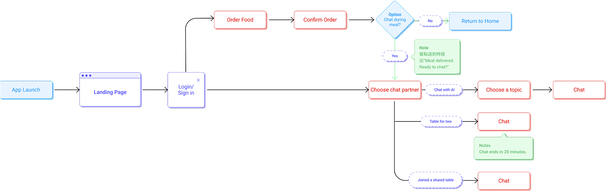
Usability Testing & Iteration
I validated the MVP through moderated usability tests with 12 participants aged 22–35, including a tester from Georgia Tech. Tasks covered account creation, starting an AI chat, selecting topics and joining a shared table. Key findings:
- Ambiguous icons – some action icons lacked clear visual cues, causing hesitation.
- Low contrast – the beige colour scheme reduced legibility for certain users.
- Navigation friction – participants struggled to find the rating function after finishing a chat.
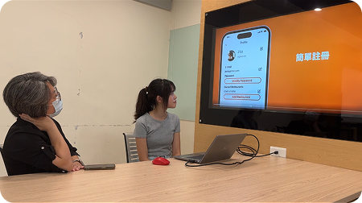
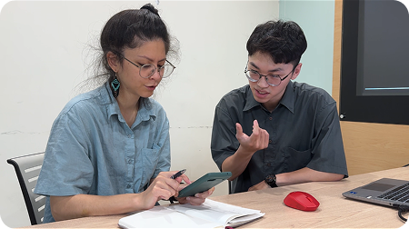
Based on these insights, I:
- Redesigned icons to communicate meaning without relying on text.
- Increased colour contrast and adjusted typography for faster comprehension.
- Streamlined the exit flow and relocated the rating prompt to a more intuitive location.
- Clarified labels for features like Table for Two and Group Table.
After iteration, participants completed tasks more confidently. The System Usability Scale (SUS) score improved to 83.3 / 100, indicating strong usability for an MVP.
- Abstract icons
- Some labels may cause confusion, for example, "Table for Two."
- The interface contains too much text and lacks sufficient visual cues, making it hard to quickly understand each function at first glance.
- Inconsistent text size and low contrast further affect readability.
Before
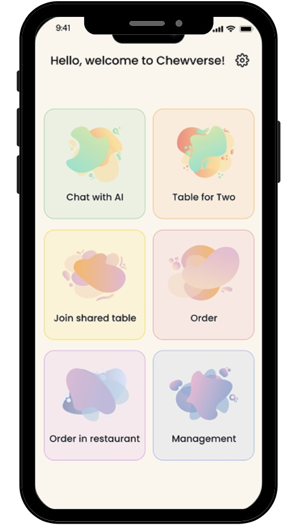
After
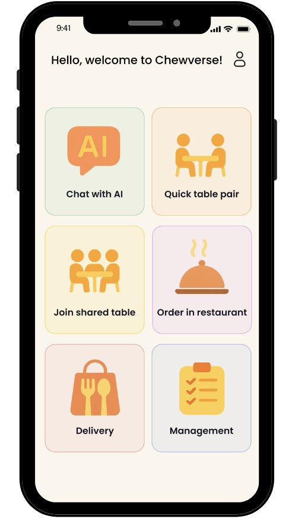
- "Table for Two" renamed to "Quick Table Pair" with a new icon illustrating two people chatting
- Increased color contrast to create a more vibrant atmosphere
- Redesigned icons to reduce reliance on text
- Replaced the "Gear" on the icon with a "Profile" icon that better represents user identity
Outcome
The final concept brings together research, interaction design and product strategy into a cohesive AI dining companion experience. The outcome demonstrates how Chewverse can translate a short, emotionally sensitive lunch break into a lightweight and approachable product flow.

Product Value & Future Potential
Chewverse turns a short solo meal into a lightweight moment of connection, positioning AI as an everyday companion rather than just a utility tool.
- User value: reduces loneliness during short meal breaks through low-pressure conversation.
- Business value: creates a differentiated service layer for cafés, restaurants, and delivery platforms.
- Future potential: can expand into ordering, recommendations, and restaurant feedback once the companionship experience is validated.
Reflection & Takeaways
This project taught me to translate an emotional pain point into a tangible product experience. Key lessons:
- Return to the user context – field testing revealed unexpected problems and gaps between our design assumptions and users’ understanding. It reminded us to keep revisiting user pain points, prototyping, testing in context, and iterating.
- Recognise the limits of testing environments – one thing I would improve is conducting usability tests in real dining contexts rather than controlled settings.
- Collaborate cross‑functionally – working closely with three programmers meant aligning on feasibility, back‑end integration and future scalability from the start.